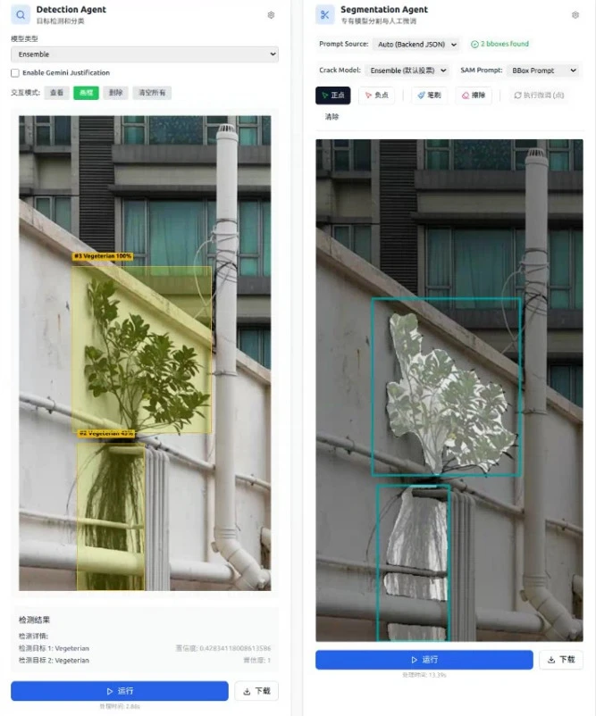

MULTIMODAL PERCEPTION · 2026
DefectBench
Can Large Multimodal Models Inspect Buildings? A Hierarchical Benchmark for Structural Pathology Reasoning
- 1Hong Kong University of Science and Technology (Guangzhou)
- 2Hong Kong University of Science and Technology
- 3Hong Kong University
- *Corresponding author
![Three-column overview of DefectBench. Left, data collection and preprocessing: classification-focused datasets (CCIC, BDD, BD3, HS-23k), detection-focused datasets (MBDD2025, CUBIT-Det, BDW) and segmentation-focused datasets (Bai-2020, CSD, DeepCrack, S2DS, CUBIT-Seg), followed by quality control with low-quality filtering, near-duplicate removal and background relevance filtering. Middle, standardized annotation of the 12 public datasets on a plug-and-play platform: expert detection models propose boxes that humans verify, and expert segmentation models propose masks that humans correct. Right, facade defect benchmarking: semantic understanding (classification and defect counting), spatial localization (object detection and visual spatial reasoning) and geometry segmentation, where a model turns an image and a prompt into a binary mask.](assets/media/overview.webp)
OVERVIEW
What, where and how: three levels of questions about a damaged facade
Automated facade inspection has relied on specialized detectors and segmentation networks, which localize defects but do not reason about them. Large multimodal models (LMMs) could, yet there was no common standard for testing them: public defect datasets use conflicting class names and different annotation levels, and existing benchmarks each cover one task. DefectBench unifies 12 public datasets into one hierarchical ontology, with 1,488 images and 4,527 annotated defect instances, and asks LMMs what defects an image shows, where they are, and what shape they have. In zero-shot experiments on 18 LMMs, the models are strong at semantic understanding and at reasoning about how defects relate in space, weak at precise localization, and able to draw segmentation masks that the paper finds competitive with specialized supervised networks.
-
01
One dataset from twelve
Images labelled at patch, box and pixel level in 12 public datasets are filtered and re-annotated under one ontology: four primary defect classes with fine-grained sub-types, boxes, masks, counts and spatial relations.
-
02
A hierarchical benchmark
Semantic perception, spatial localization and generative geometry segmentation are tested in one multi-turn dialogue, from naming the defects to painting their masks.
-
03
A zero-shot baseline
Open-source and closed-source LMMs are evaluated without any domain-specific training, which shows where they can already help in inspection and where they cannot.
-
04
An annotation platform
A plug-and-play, human-in-the-loop toolkit lets pre-trained detectors and segmenters propose boxes and masks that experts verify and correct.
BENCHMARK
Twelve public datasets, one ontology, five questions per image
The source data are four classification datasets (CCIC, BDD, BD3, HS-23k), three detection datasets (MBDD2025, BDW, CUBIT-Det) and five segmentation datasets (Bai-2020, CSD, DeepCrack, S2DS, CUBIT-Seg). Three filters clean them: blurred or low-resolution images are removed by Laplacian variance, near-duplicates by cosine similarity of DINOv2 features, and images without a relevant building background by CLIP zero-shot filtering. The remaining images are annotated on the platform below. In its detection module, existing boxes are checked by hand, and for unlabelled images an ensemble of detectors (such as YOLO12-M, YOLO11-M, Faster R-CNN and RT-DETR) proposes boxes that experts calibrate. In its segmentation module, the refined boxes prompt SAM-3 and a set of specialized models to produce masks, which experts correct with point prompts and a brush.

Table 1 of the paper: the annotated defect instances by primary class and sub-type, 4,527 in total over 1,488 images.
| Sub-type | Instances |
|---|---|
| Crack | |
| Linear crack | 2042 |
| Map cracking | 80 |
| Material loss | |
| Spalling | 906 |
| Peeling | 51 |
| Surface stain | |
| Corrosion | 254 |
| Rust stain | 21 |
| Leakage stain | 803 |
| External fixings | |
| Vegetation growth | 221 |
| Graffiti | 30 |
| Surface contaminants | 119 |
-
Level 1 · Semantic perception (what)
Q1 asks which of the four primary defect classes are visible in the image. Q2 asks how many instances of each class there are.
-
Level 2 · Spatial localization (where)
Q3 asks for a bounding box and class for every defect instance. Q4 asks for the spatial relation between each pair of detected defects: inclusion, overlapping, adjacency or disjoint.
-
Level 3 · Geometry segmentation (how)
Q5 asks an image-editing model to edit the input image into a binary mask of the target defect class, white on black, at the original resolution and viewpoint.
RESULTS
Good at naming and relating defects, poor at placing boxes, promising at masks
All models are evaluated zero-shot on an evaluation set of 487 samples, drawn at random with about 100 images per primary class so that no class dominates. The questions are asked as one multi-turn dialogue, each conditioned on the model's earlier answers. Closed-source models and some large open-source models are called through cloud APIs; the other open-source models run on a local server with four NVIDIA RTX 4090 GPUs. Level 1 is scored with precision, recall and F1 for identification and with mean absolute error (MAE) and relative error (RE) for counting; Level 2 with precision, recall and F1; Level 3 with mean intersection over union (mIoU), precision, recall, F1 and pixel accuracy.
- Level 1 · identification F1
- 0.8442
- Best of the 18 models, Qwen3-VL-32B-thinking; the best closed-source model reaches 0.8048. Table 2.
- Level 2 · detection F1
- 0.4226
- Best box-detection result, Gemini-3-pro-preview; well below supervised detectors, the paper notes. Table 3.
- Level 2 · spatial reasoning F1
- 0.8390
- The same model on the relations between defects (Q4), the best result on that task. Table 3.
- Level 3 · segmentation mIoU
- 0.7418
- Gemini-3-pro-edit, zero-shot; the other four image-editing models reach 0.6848 to 0.6926. Table 4.
Level 1: what defects, and how many
Open-source models hold up against closed-source ones here. Qwen3-VL-32B-thinking has the highest identification F1 of all models, above the larger Qwen2.5-VL-72B-instruct, and the lightweight Qwen3-VL-8B-instruct performs on par with the 72B model, which the paper reads as reasoning mechanisms mattering more than parameter count for this task. Counting is harder: the average MAE of the open-source models is 0.5970 to 0.8568 and that of the closed-source models 0.8449 to 1.0567, as models count defects twice or miss them when several small defects occur together. Surface stains, with blurred boundaries and irregular shapes, are the hardest class to count: the per-class MAE is between 0.9425 and 1.4542 for every model.
Table 2 of the paper: Level 1 on the DefectBench evaluation set, zero-shot. Q1 is defect identification; Q2 is defect counting, shown here as the average over the four primary classes. The per-class counting errors are in the paper.
| Model | Q1 · identification | Q2 · counting (average) | |||
|---|---|---|---|---|---|
| P ↑ | R ↑ | F1 ↑ | MAE ↓ | RE ↓ | |
| Open-source large multimodal models | |||||
| GLM-4.5V | 0.6698 | 0.8264 | 0.7399 | 0.6278 | 0.3989 |
| GLM-4.6V | 0.7249 | 0.7778 | 0.7504 | 0.5970 | 0.4195 |
| Deepseek-vl2 | 0.6191 | 0.5174 | 0.5637 | 0.7423 | 0.6271 |
| InternVL3.5 | 0.5646 | 0.6528 | 0.6055 | 0.8003 | 0.5570 |
| LLaVa-34B | 0.6068 | 0.5984 | 0.6026 | 0.7172 | 0.5512 |
| Qwen2.5-VL-72B-instruct | 0.6912 | 0.7720 | 0.7294 | 0.6653 | 0.4820 |
| Qwen2.5-VL-7B-instruct | 0.5240 | 0.4421 | 0.4796 | 0.8568 | 0.7115 |
| Qwen2.5-VL-32B-instruct | 0.5948 | 0.7627 | 0.6684 | 0.6992 | 0.4395 |
| Qwen3-VL-8B-instruct | 0.6784 | 0.7812 | 0.7262 | 0.6088 | 0.4266 |
| Qwen3-VL-32B-thinking | 0.7431 | 0.9772 | 0.8442 | 0.7596 | 0.4710 |
| Qwen3-VL-32B-instruct | 0.5748 | 0.9514 | 0.7166 | 0.8188 | 0.3962 |
| Closed-source large multimodal models | |||||
| gpt-4o | 0.6983 | 0.8252 | 0.7565 | 0.9686 | 0.5080 |
| gpt-5.1-chat-latest | 0.7267 | 0.9016 | 0.8048 | 0.8620 | 0.4129 |
| gpt-5.2-pro | 0.6349 | 0.9097 | 0.7479 | 0.8495 | 0.4506 |
| gemini-3-flash-preview | 0.5665 | 0.9711 | 0.7156 | 1.0540 | 0.6780 |
| gemini-3-pro-preview | 0.6158 | 0.9294 | 0.7408 | 0.8449 | 0.4811 |
| Doubao-Seed-1.8 | 0.6276 | 0.8935 | 0.7373 | 1.0567 | 0.4827 |
| Claude-opus-4.1 | 0.6809 | 0.8843 | 0.7694 | 0.9387 | 0.5320 |
P: precision, R: recall, MAE: mean absolute error, RE: relative error. Bold marks the best value within each group.
Level 2: where the defects are, and how they relate
Zero-shot box detection (Q3) remains difficult. Gemini-3-pro-preview is best with an F1 of 0.4226, which the paper notes is still far from task-specific supervised detectors, and several models built for stronger reasoning, such as Qwen3-VL-32B-Thinking, the GPT models and Claude-opus-4.1, drop sharply when they have to output coordinates. The same models do much better at visual spatial reasoning (Q4): Gemini-3-pro-preview reaches an F1 of 0.8390 and GLM-4.6V is the most balanced open-source model. For most models precision is higher than recall on Q4, so the relations they report are mostly right but many are missed. The paper concludes that current LMMs are better suited to qualitative diagnosis than to quantitative spatial mapping.
Table 3 of the paper: Level 2 on the DefectBench evaluation set, zero-shot. Q3 is object detection with bounding boxes; Q4 is visual spatial reasoning over pairs of detected defects.
| Model | Q3 · object detection | Q4 · visual spatial reasoning | ||||
|---|---|---|---|---|---|---|
| P ↑ | R ↑ | F1 ↑ | P ↑ | R ↑ | F1 ↑ | |
| Open-source large multimodal models | ||||||
| GLM-4.5V | 0.3157 | 0.3866 | 0.3476 | 0.7131 | 0.6198 | 0.6632 |
| GLM-4.6V | 0.3587 | 0.3981 | 0.3774 | 0.7093 | 0.6653 | 0.6866 |
| LLaVa-34B | 0.2871 | 0.1366 | 0.1851 | 0.2246 | 0.1353 | 0.1688 |
| InternVL3.5 | 0.2517 | 0.1725 | 0.2047 | 0.8462 | 0.2112 | 0.3380 |
| Qwen2.5-VL-7B-Instruct | 0.2949 | 0.0447 | 0.0777 | 0.2630 | 0.1194 | 0.1642 |
| Qwen2.5-VL-32B-Instruct | 0.3385 | 0.2706 | 0.3008 | 0.4462 | 0.3172 | 0.3708 |
| Qwen2.5-VL-72B-Instruct | 0.3834 | 0.2429 | 0.2974 | 0.6815 | 0.5666 | 0.6188 |
| Qwen3-VL-8B-Instruct | 0.3062 | 0.3029 | 0.3045 | 0.4460 | 0.2094 | 0.2850 |
| Qwen3-VL-32B-Instruct | 0.2227 | 0.2464 | 0.2340 | 0.5879 | 0.5325 | 0.5588 |
| Qwen3-VL-32B-Thinking | 0.1457 | 0.0417 | 0.0648 | 0.4345 | 0.5652 | 0.4763 |
| Closed-source large multimodal models | ||||||
| gpt-4o | 0.0098 | 0.0114 | 0.0104 | 0.6097 | 0.5698 | 0.5891 |
| gpt-5.1-chat-latest | 0.1027 | 0.1056 | 0.1039 | 0.7314 | 0.5846 | 0.6499 |
| gpt-5.2-pro | 0.2089 | 0.2870 | 0.2357 | 0.7989 | 0.7941 | 0.7965 |
| Gemini-3-flash-preview | 0.2380 | 0.4974 | 0.3188 | 0.8366 | 0.5899 | 0.6919 |
| Gemini-3-pro-preview | 0.3607 | 0.5333 | 0.4226 | 0.8655 | 0.8141 | 0.8390 |
| Doubao-Seed-1.8 | 0.3487 | 0.4702 | 0.3969 | 0.6305 | 0.6684 | 0.6489 |
| Claude-opus-4.1 | 0.1608 | 0.2243 | 0.1867 | 0.7615 | 0.7801 | 0.7707 |
P: precision, R: recall. Bold marks the best value within each group, as in the paper.
Level 3: the shape of each defect
Segmentation is posed as image generation: five image-editing models are asked to turn the photograph into a binary mask of the target defect, without any defect-specific training. Gemini-3-pro-edit is best on four of the five metrics, with an mIoU of 0.7418 and an F1 of 0.7875; the other four models are close to each other, with mIoU between 0.6848 and 0.6926. The paper judges these zero-shot results competitive with specialized supervised segmentation models.
Table 4 of the paper: Level 3, pixel-level generative segmentation on the DefectBench evaluation set, zero-shot.
| Model | mIoU ↑ | P ↑ | R ↑ | F1 ↑ | PA ↑ |
|---|---|---|---|---|---|
| Qwen-image-edit-plus | 0.6852 | 0.8110 | 0.7495 | 0.7265 | 0.9709 |
| Wan2.6-image | 0.6848 | 0.8121 | 0.7349 | 0.7192 | 0.9717 |
| Doubao-seedream-4.5 | 0.6920 | 0.7867 | 0.7442 | 0.7344 | 0.9676 |
| Gemini-3-pro-edit | 0.7418 | 0.8467 | 0.8072 | 0.7875 | 0.9713 |
| FLUX-2-pro-edit | 0.6926 | 0.8032 | 0.7455 | 0.7397 | 0.9693 |
mIoU: mean intersection over union, P: precision, R: recall, PA: pixel accuracy. Bold marks the best value in each column, as in the paper.
What the outputs look like
Two qualitative comparisons from the paper, on photographs from the dataset. On the left, the boxes that ten open-source models return for three images; on the right, the masks that the five image-editing models produce for one example of each primary class, with the ground truth in the last row.
![Grid of detection results on three facade photographs: a patch of spalled plaster, a crack running through a brown stain, and a cloth hanging on a railing. Each of ten open-source models (GLM-4.5V, GLM-4.6V, InternVL3.5, LLaVa-34B, Qwen2.5-7B-instruct, Qwen2.5-32B-instruct, Qwen2.5-72B-instruct, Qwen3-8B-instruct, Qwen3-32B-instruct and Qwen3-32B-thinking) has its predicted, class-coloured boxes drawn on the three images; the bottom row shows the raw images and the ground-truth boxes. Many predicted boxes sit on the defect but are too large, shifted or labelled with a different class than the ground truth.](assets/media/detection-examples.webp)
![Grid of segmentation results. Rows: Wan2.6-image, Qwen-image-edit-plus, Gemini-3-pro-edit, Doubao-seedream-4.5, FLUX-2-pro-edit and the ground truth. Columns: one example image each for crack, material loss, surface stain and external fixings. Each cell shows the photograph with the labelled boxes and the model's mask overlaid in the class colour; most masks follow the outline of the defect, with visible differences between models in how much of the stain, the missing plaster or the plant they cover.](assets/media/segmentation-examples.webp)
Scope and limits
The numbers above are zero-shot results on the 487-sample evaluation set; no model is fine-tuned on DefectBench. Because the questions form one dialogue, errors cascade: a class that is misidentified in Level 1 is carried into the detection prompt, which produces boxes in the right place with the wrong class, as the paper observes for Qwen3-32B-Instruct. In Level 3 the image-editing models do not always follow the instruction to output a clean binary mask: the paper mentions RGB textures and reconstructed background, and the figure below shows raw outputs with leftover labels and other artifacts. The evaluation therefore binarizes each output and scores it only inside the regions given by the detection boxes, so the Level 3 metrics measure how well boundaries are drawn there, not the raw generated image. Even so, the paper reports that subtle defects are sometimes omitted and that false positives appear in heavily textured regions.
![Raw outputs of five image-editing models (Gemini-3-pro-edit, Wan2.6-image, Doubao-seedream-4.5, FLUX-2-pro-edit and Qwen-image-edit-plus) for one photograph of a wall with two cracks and a patch of missing material, next to the ground truth. For each model the figure shows the photograph with its mask overlaid, the generated crack mask and the generated material-loss mask. The masks are mostly white on black, but several still contain box outlines and text labels, one contains a checkerboard patch, one keeps faint wall texture, and the shapes differ clearly between models.](assets/media/generative-instability.webp)
The code repository holds the evaluation scripts for the three levels, the annotation toolkit, the preprocessing scripts and a 50-image sample of the dataset with labels and masks. It is released for academic research use.
CITATION
@misc{zhong2026defectbench,
title={Can Large Multimodal Models Inspect Buildings? A Hierarchical Benchmark for Structural Pathology Reasoning},
author={Zhong, Hui and Gao, Yichun and Liu, Luyan and Yang, Hai and Wang, Wang and Zhang, Haowei and Zheng, Xinhu},
year={2026},
eprint={2603.20148},
archivePrefix={arXiv},
primaryClass={cs.CV},
url={https://arxiv.org/abs/2603.20148},
}